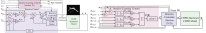

About Me
Dr. Dipankar Bhattacharya is an accomplished researcher and academic with a Ph.D. in Mechatronics Engineering from The University of Auckland. With a robust background in mechanical and automation engineering, my work primarily focuses on the design, modeling, and control of advanced robotic systems, including cable-driven robots and soft robotic esophagus models. I am passionate about transforming knowledge into innovative technologies that drive progress and improve human life. My postdoctoral research at The Chinese University of Hong Kong and visiting fellowship at École Centrale de Nantes have further honed my expertise in iterative-learning control and cable-driven parallel robots. I have a proven track record of publishing high-impact research in prestigious journals and contributing to significant advancements in robotics and automation. My commitment to mentorship, collaborative research, and academic excellence underscores my dedication to fostering the next generation of engineers and researchers.
Employment History
Postdoctoral Fellow
Department: Mechanical and Automation Engineering
Institution: The Chinese University of Hong Kong
Dates: 01/03/2021 – 30/06/2024
Supervisor: Prof. Darwin Lau
Projects:
- Design, modeling, and control of cable-driven robots with cable wrapping around obstacles.
- Design and modeling of a cable-driven growing vine robot for accurate and safer false ceiling inspections.
Responsibilities:
- Performing both independent and collaborative research.
- Contributing discrete components of a larger project under the general direction of the principal researcher.
- Writing articles, proposals, and reports.
- Mentorship and supervision of undergraduate final year projects and postgraduate research students.
- Delivered lectures for the course MAEG5090 Topics in Robotics to postgraduate students.
Visiting Postdoctoral Fellow
Institution: Laboratoire des Sciences du Numérique de Nantes (LS2N), École Centrale de Nantes (ECN)
Dates: 26/10/2021 – 05/01/2022
Supervisors: Prof. Stephane Caro and Prof. Darwin Lau
Project: Iterative-learning control of cable-driven parallel robot.
Graduate Teaching Assistant
Department: Mechatronics Engineering
Institution: The University of Auckland, New Zealand
Dates: 24/07/2027 – 27/11/2020
Projects:
- Courses taken: MECHENG 706: Mechatronics Design Projects, MECHENG 306: Design of Sensing and Actuating Systems, ENGGEN 115: Principles of Engineering Design, ENGGEN 131: Introduction to Engineering Computation and Software Development.
Responsibilities:
- Supervising undergraduates tudents for problem solving and negotiating practical solutions in various design projects.
- Tutoring includes preparing and delivering tutorial sessions, work- shops, drop-in clinics, monitoring and answering questions on online forums such as Piazza, CANVAS etc.
- Responsible for the laboratory to assist students in completing laboratory work in a course.
- Arranging briefing sessions for TAs, identifying the key concepts, equipment usage, health and safety and recording whether students have attended and are at a satisfactory level.
- Responsible for conducting weekly interviews to monitor the students’ progress in design projects.
Research Assistant
Department: Mechatronics Engineering
Institution: The University of Auckland, New Zealand
Dates: 01/01/2020 – 01/02/2021
Supervisor: Prof. Peter Xu
Projects:
- In vitro stent testing on a robotic soft esophagus (RoSE).
Responsibilities:
- Preparing experimental set up.
- Conducting experiments and collecting real-time data.
- Preparing report on monthly basis.
Lecturer
Department: School of Electrical, Electronics and Communication Engineering
Institution: Galgotias University, India
Dates: 19/07/2013 – 18/06/2016
Responsibilities:
- Delivering lectures for undergraduate and postgraduate courses.
- Developing and constructing teaching materials for lectures.
- Supporting students in a pastoral/advisory role.
- Delivering laboratory sessions, and managing and supervising staff and lab technicians.
- Supervision of final year undergraduate projects.
Projects
Name: Modeling of Cable-Object Interference and Wrapping in Complex Geometrical-Shaped Cable-Driven Parallel Robots
Designation: Postdoctoral Fellow
Department: Mechanical and Automation Engineering
Institution: The Chinese University of Hong Kong
Dates: 01/03/2021 – 30/06/2024
Description:
Background and Problem:
Cable-Driven Parallel Robots (CDPRs) utilize cables as actuators to maneuver rigid body links in a parallel mech- anism setup. Typically, CDPR kinematic and dynamic models avoid cable-object (cable-link and cable-obstacle) interferences to prevent sudden changes in cable tension that could deviate the end-effector’s trajectory. However, allowing these interferences can lead to cable wrapping, where cables wrap around complex- shaped surfaces upon contact, enhancing the CDPR’s workspace and reducing its footprint. Despite the potential benefits, there currently exists no kinematic and dynamic model that effectively incorporates cable wrapping around such complex-shaped surfaces.Contribution:
This project introduces a novel numerical-based kinematic and dynamic modeling framework for CDPRs that detects and then manages cable wrapping around multiple links and obstacles with the assumption that the cables remain taut and maintain contact from the initial cable entry point to the final exit point on the surfaces. Through simulations and hardware tests on various shaped links and obstacles, it has been demonstrated that this framework can be efficiently and effectively used for modeling of cable wrapping, significantly enhancing CDPR functionality in complex environments.
Name: Tri-Space Operational Control of Redundant Cable-Driven Parallel Robots Using an Iterative-Learning based Reactive Approach
Designation: Postdoctoral Fellow
Department: Mechanical and Automation Engineering
Institution: The Chinese University of Hong Kong
Dates: 01/03/2021 – 30/06/2024
Description:
-
Background and Problem: Due to the two levels of redundancy and numerous constraints within the CDPR actuation, joint and operational spaces (together known as the tri-space), tracking a given trajectory in the operational space while satisfying constraints in tri-space simultaneously is challenging. There does not exist any tri-space control framework, which is robust, effective, and directly applicable to several architectures of redundantly actuated CDPRs.
-
Contribution: This project proposes a tri-space control framework that combines reactive control (RC) and iterative-learning control (ILC) to perform repetitive tasks in the operational space. The framework allows the tracking of operational space trajectories online with feasible cable forces while avoiding undesirable situations such as cable-link interference, joint interference, and loss of manipulability. On the other hand, by finding an optimal parameter in the null space using a novel parameterization of a null-space vector, the performance can be improved through ILC when the task is repeatedly executed. Simulation and hardware results on various multilink cable-driven robots (MCDRs) and hybrid cable-driven robots (HCDRs) show that the proposed tri-space control framework can be conveniently and effectively applied to the real-time control of different CDPRs.

Name: Nonlinear Model Predictive Control of a Robotic Soft Esophagus (RoSE)
Designation: Doctoral fellow
Department: Mechatronics Engineering
Institution: The University of Auckland, New Zealand
Dates: 2020 – 2021
Description:
-
Background and Problem:Strictures caused by esophageal cancer can narrow down the esophageal lumen, leading to dysphagia. Palliation of dysphagia has driven the development of a robotic soft esophagus (RoSE), which provides a novel in vitro platform for esophageal stent testing and food viscos- ity studies. However, peristaltic wave generation and control were done in an open-loop manner since the conduit lacked visibility and embedded sensing capability.
-
Contribution: In this project, a novel version of robotic soft esophagus (RoSE) is proposed and its model predictive control (MPC) is implemented to govern the peristalsis and air pressure profile autonomously. The implemented MPC used sparse identification of nonlinear dynamics with control (SINDYC) models to estimate the future states of ROSE. The dynamic models are discovered from the embedded TOF and pressure sensor data.

Name: RoSE: A Robotic Soft Esophagus for Endoprosthetic Stent Testing
Designation: Doctoral fellow
Department: Mechatronics Engineering
Institution: The University of Auckland, New Zealand
Dates: 2020 – 2021
Description:
-
Background and Problem:Endoprosthetic stent placement is an immediate and cost-effective therapy for dysphagia caused by malignant esophageal strictures from esophageal cancer. However, later stage complications, such as stent migration, could weaken the swallow efficacy in the esophagus. The stent radial force (RF) on the esophageal wall is pivotal in avoiding stent migration. Due to limited randomized controlled trials in patients, the stent design and stenting guidelines are still unconstructive.
-
Contribution: To address the knowledge deficit, we have developed a bio-mimicking robotic soft esophagus (RoSE) as an in vitro testing device of endoprosthetic stents for dysphagia management. We investigated the capabilities of the RoSE by implanting two stents (stent A and B) of different radial stiffness characteristics, to measure the stent RF and its effect on the stent migration. Also, endoscopic manometry on the RoSE under peristalsis has been performed to study the impact of stenting and stent dysfunctionality on the intrabolus pressure signatures (IBPSs) in the RoSE, and further its effects on the swallowing efficacy.

Name: SoGut: A Soft Robotic Gastric Simulator
Designation: Doctoral fellow
Department: Mechatronics Engineering
Institution: The University of Auckland, New Zealand
Dates: 2020 – 2021
Description:
-
Background and Problem:The human stomach breaks down and transports food by coordinated radial contractions of the gastric walls. The radial contractions periodically propagate through the stomach and constitute the peristaltic contractions, also called the gastric motility. The force, amplitude, and frequency of peristaltic contractions are relevant to massaging and transporting the food contents in the gastric lumen. However, existing gastric simulators have not faithfully replicated gastric motility.
-
Contribution: To address the research gap, we report a soft robotic gastric simulator (SoGut) that emulates peristaltic contractions in an anatomically realistic way. SoGut incorporates an array of circular air chambers that generate radial contractions. The design and fabrication of SoGut leverages principles from the soft robotics field, which features compliance and adaptability. We studied the force and amplitude of the contractions when the lumen of SoGut was empty or filled with contents of different viscosity. We examined the contracting force using manometry. SoGut exhibited a similar range of contracting force as the human stomach reported in the literature. Besides, we investigated the amplitude of the contractions through videofluoroscopy where the contraction ratio was derived.